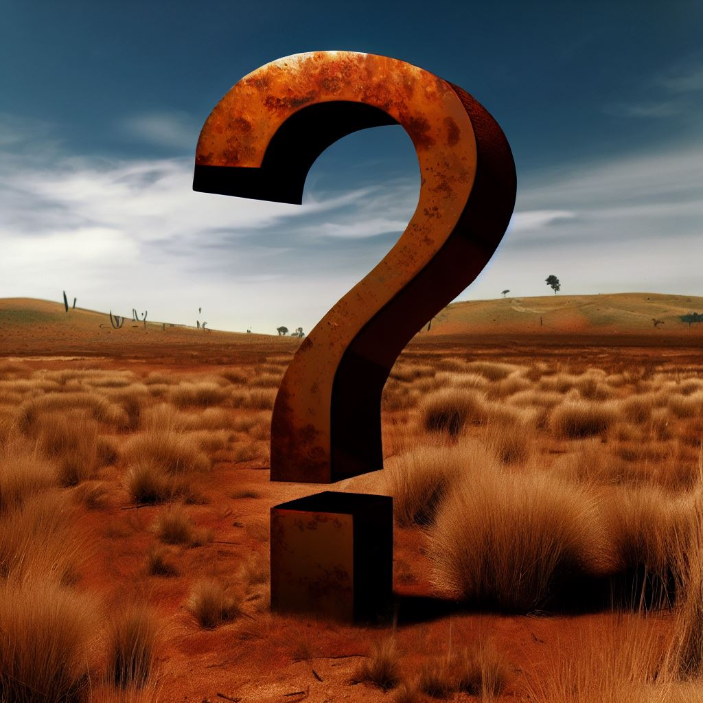

Welcome to 'The Down Under Mystery'

In this little adventure we want to take you on a journey through Sydney and the nearby Blue Mountains.
You will be sent to 15 locations where you have to gather information to solve all the tasks.
Most of the times you will have to look for signs or plaques where you will then find everything to solve the riddle.
For every riddle you solve, you will get a letter for the final question
The letters will probably make no sense until you solve all riddles.
Only then will you receive the final clue to decode the last question.
Are you up for an adventure?